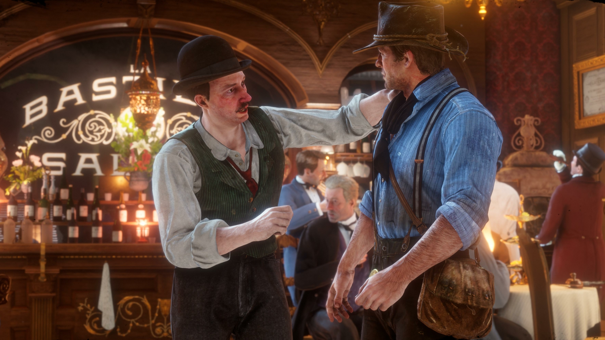

"Nothin' means more to me than this gang. I would kill
for it. I would happily die for it. I wish things were
different... But it weren't us who changed."
- Arthur Morgan.
Arthur Morgan is the main protagonist of the 2018 action-adventure video game Red Dead Redemption II.
He is a notorious outlaw who serves as the lead enforcer of the Van der Linde gang, and assists his mentor Dutch van der Linde in trying to live the dream of living
outside of the law, who begins to have doubts about his loyalty to the gang's leader. Throughout the game, he attempts to either achieve his redemption or become even
more ruthless and cold-blooded in his life.
He was portrayed by Roger Clark in motion capture.
☲ Contents
• Biography
• Early Life
• Red Dead Redemption
• Personality
• Reception
• Quotes
• Arthur Morgan Resurrection
• External Links
Biography
Early Life
Arthur Morgan was born in 1863 in the northern United States to Lyle and Beatrice Morgan, with the latter dying of unknown causes when he was a child. Growing up with his father, Arthur had a strained relationship with Lyle, who was a petty criminal who was eventually killed in front of his son. Now an orphan, Morgan would become a delinquent until he encountered Dutch van der Linde and Hosea Matthews, who decided to take him as their surrogate son. He would learn all he could from his mentors, and later founded the Van der Linde gang with them. Into his adulthood, Arthur would begin a romantic relationship with Mary Gillis, but they would separate due to Arthur's criminal life and him receiving disapproval from Mary's father. Despite this, Morgan developed a friendship with Mary's brother Jamie, whom he taught how to horseback ride.
In the 1800s, Arthur would encounter a young boy named John Marston, who was later inducted into the Van der Linde gang and became close as brothers with Morgan. However, their friendship became strained when John refused to take responsibility for his son Jack with his lover Abigail Roberts. At some point in time, Morgan had a one night stand with a woman named Eliza, who became pregnant with their son Isaac. Though he remained with Dutch and the gang, Arthur would visit them periodically, and laments that he stay with them for a few nights was a good kid. One day he came across their home and found two crosses, deducing that they were murdered, and later learned they were killed by a couple of robbers. The incident traumatized Morgan, who became hardened from the event and started to believe that no good came from living as a criminal.
Red Dead Redemption
In 1899, after the failed ferry heist in Blackwater, Arthur, Dutch van der Linde and the gang were forced to flee north to the snowy mountains of Colter in order to lay low to avoid the law. That didn't last that long when the whole gang decided to relocate the camp to New Hanover where they perform different heists and jobs. When Arthur heard that Micah Bell was locked up at Strawberry, he nearly saw the opportunity to watch him getting hanged for his crimes, but he broke out Micah anyway and went on a shootout before they flee the town and returned to the camp.
Ever since two Pinkerton agents, Andrew Milton and Edgar Ross, discovered their camp location, the gang members were forced once again to move the camp to Clemens Point. Despite this, Arthur, Lenny, Karen and Bill Williamson pulled a heist in Valentine before rescuing Jack Marston and once again relocating to Saint Denis to escape the Pinkertons. Eventually, he and the gang pulled off another heist before being washed ashore to Guarma. Upon returning to civilization, the gang fell apart. Just before his death, Arthur learns that Micah was ratting to the Pinkertons before they ambush Beaver Hollow and confronts him before dying.
"All of you... you pick your side now because this is over. All them years Dutch... for this snake?"
- Arthur to Micah & Dutch during the final stand off.
Personality
"There's a good man within you... But he is wrestling with a giant."
- Mary to Arthur.
Arthur is presented as a cold, wrathful and brooding outlaw, who is fully willing to resort to threats and violence if somebody angers him. Although he seems like a despicable person at first, while showing no remorse whatsoever for the people he has killed. It is proven throughout the story that Arthur is actually a good person deep down, who holds many regrets about the life he chose. This included not being able to stay with and marry his former lover, Mary Linton, due to her family rejecting him because of his life as an outlaw.
While having low honor, Arthur can be portrayed as an aggressive, cold, callous, selfish, and even sadistic person who has absolutely no qualm about doing some of the worst things that he is capable of: killing innocent townspeople, abusing animals and verbally abusing his fellow gang-members to name a few. During the loansharking missions set by Leopold Strauss, Arthur can ruthlessly extort and harm the debtors who owe the gang money (as he did with Thomas Downes). The player can ultimately determine Arthur's morality via their choices which directly affect Arthur's honor rating.

One notable trait about Arthur's character was that he was never interested in, nor motivated by the concept of revenge. As throughout the course of the game, he states it to be an idiot's game, and had no interest in getting payback on Angelo Bronte or Leviticus Cornwall. However, Arthur can also go back on this by going back for the money, with the intention of facing Micah and Dutch. Arthur can still be portrayed as selfish and hurtful, interested in retrieving the gang's money rather than helping John escape to his family.
Despite his low-honor character being significantly more villainous, Arthur still does retain some of his standards and redeeming qualities, such as wanting to help John Marston and his family escape the Van der Linde gang's downfall. He also still despised loansharking, despite being very intimidating and harmful to the debtors. Regardless of high or low honor, Arthur will still exile Leopold Strauss from the gang after suffering a conscience crisis. Arthur also comes to accept his fate and that his death is impending, although his tuberculosis diagnosis can still present him a chance to try and change for the better.
Arthur is irreligious, although he does appear to believe in some form of afterlife.
Reception
After the first few trailers of Red Dead Redemption II, many fans were disappointed that they wouldn't be playing as John Marston. However, after playing through the game many players grew extremely fond of Arthur, and his complexity as a character. Along with the game's beautiful graphics and immersive open-world, many believed that Arthur brought the game's world and some of the other characters to life. His development and potential path to redemption are often subjects of very high praise from fans and critics alike. Roger Clark stated that he wanted to portray Arthur as complex enough for the player to choose his path but still make sense. For his work on the game, Clark received numerous nominations including Best Performance at The Game Awards.
With many players establishing a very strong player/protagonist connection with him, many of them were saddened by Arthur's death and him contracting tuberculosis beforehand. Arthur's tuberculosis also raised awareness for the deadly disease.
Many fans would easily state that Arthur Morgan is one of Rockstar's best protagonists.
Quotes
"We're thieves, in a world that don't want us no more."
- Arthur Morgan's view on the world.
"Maybe when your mother is finished mourning your father... I'll keep her in black, on your behalf!"
- Arthur Morgan threatening Archie Downes.
"We got lawmen in three different states after us. They chased us from the west, they chased us over the mountains."
- Arthur on the gang's situation.
"Where's our money"!?
- Arthur assaulting Thomas Downes.
"You got some money for me, boy? I've seen your name in our ledger."
- Arthur to Winton Holmes.
"As long as we get paid or you get shot I'm happy."
- Arthur to Uncle.
"I wish things were different. But it weren't us who changed."
- Arthur to John Marston.
"This whole thing is pretty much done. We're more ghosts than people."
- Arthur to Sadie Adler.
"I guess I... I'm afraid."
- Arthur Morgan telling Sister Calderon that he fears death due to his tuberculosis.
"Arthur: All them years.
Sadie: It's gonna be alright. We're going to get Abigail out.
Arthur: 'Course we are. Because we don't leave our own behind. That's what Dutch taught us.
Sadie: Well, seems his mind got changed on that idea.
Arthur: I remember one time, years ago, he let fly at me for robbing this house. Saying, "that man was too poor." How taking from him was no different from the system we was fighting against. Now? He don't care who dies, so long as he and Micah get rich off of it."
- Arthur lamenting Dutch's fall from the leader he was while having low honor.
"Dutch... Micah... COME AND GET ME, YOU BASTARDS!!!"
- Arthur if he goes for the loot.
"DAMN US BOTH!"
- Arthur's last words to Micah Bell if he has low honor.
"You let him damn us all, Dutch."
- Arthur if he goes back for the money. (Low Honor route).
"John made it. He's the only one. Rest of us, no. But... I tried. In the end, I did."
- The very last words of a mortally sick Arthur Morgan (High Honor route).
Trivia
• Arthur is possibly of Welsh descent.
• If Arthur has low honor, he will be symbolized with a twisted, black-furred coyote, which are often seen as sinister tricksters.
• Arthur's low honor also subtly affects his dialogue both in the story and in free roam. For example, during gunfights with lawmen or fistfights with NPCs, or when killing someone, his dialogue will be less sarcastic and more vicious. Also, when bumping into NPCs, he will respond in a nasty manner while they apologize (whereas the opposite occurs should Arthur have high honor).
• While using the Dead Eye targeting system as Arthur with low honor, the heart beat sound will be absent, possibly reflecting his lack of empathy.
• If Arthur talks with Mary-Beth, Karen or Tilly while having low honor, Arthur can admit he feels like he's lost his mind and isn't in control of himself (a possible fourth wall break). He can even state that he's no better than Micah, or believe that Micah put a spell on him.
• Arthur Morgan's actor, Roger Clark, received numerous nominations for his performance, and won the Best Performance at the The Game Awards.
• Arthur is about 180cm (5'11" feet) tall and weighs 81kg (178 pounds).
• According to Andrew Milton, the bounty for Arthur Morgan in 1899 was $5,000. Adjusted for inflation, Arthur's bounty today would be worth $190,778.56 in the year 2024.
• At the time of his death in 1899, Arthur Morgan was only 36 years old, making him only eight years younger than Dutch and ten years older than John.